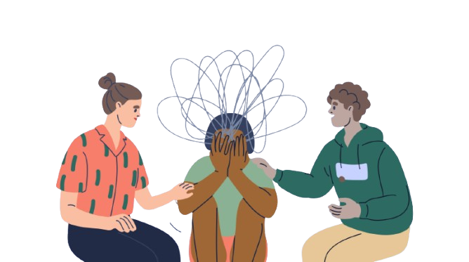

EFFECTS OF MENTAL HEALTH

EMOTIONAL AND BEHAVIOURAL CONSEQUENCES
Mental health conditions deeply influence a person’s emotions and behavior. These effects can manifest in subtle changes or extreme disruptions that impact daily life, relationships, and overall well-being. This section breaks down the various emotional and behavioral consequences of poor mental health and offers insights into recognizing and managing them.
Emotional Consequences
- Mood swings, chronic sadness, anxiety, and irritability
- Social withdrawal and isolation from friends and family
- Substance abuse, self-harm, or risky behavior as coping mechanisms
- Disrupted sleep, eating habits, focus, and daily functioning
SUBSTANCE ABUSE
Using Substances to Cope
“When emotions become too heavy, some turn to unhealthy escapes.”
- Drugs or alcohol may be used as a temporary fix for deep emotional pain.
- Substance use often worsens anxiety and depression over time.
- Addiction and mental illness are often interconnected and need dual treatment.
- Addressing both at the same time offers the best path to recovery.
When struggling with mental health, some individuals turn to drugs or alcohol as a way to cope. While it may bring temporary relief, substance use often makes anxiety and depression worse over time.
RELATIONSHIPS
THE EFFECT ON FAMILY AND FRIENDS:
- Mood swings, irritability, or low energy can strain family and friendships.
- People may withdraw or avoid social situations altogether.
- Communication breaks down, leading to distance and misunderstandings.
- Emotional connection may fade, leaving both sides feeling alone.
- People with mental health issues may feel unworthy of love, leading to emotional distancing.
- Mental health struggles can lead to codependent or imbalanced relationship dynamics.
- Miscommunication and misunderstandings may increase due to emotional instability.

REDUCED PRODUCTIVITY
When your mind is clouded, it’s like trying to drive through heavy fog. Tasks that were once clear and simple now seem confusing. Deadlines that used to motivate you now slip past unnoticed, blending into a haze of anxiety and procrastination. Motivation stalls and creativity withers, leaving you stuck in place like a car trapped in thick mud. Every small hill transforms into an insurmountable mountain, and even the tiniest obstacles seem to drain your energy and willpower. The world outside keeps moving forward, but inside, you feel trapped in slow motion, struggling just to keep up.
Suicide Risk
One of the most serious effects of poor mental health is an increased risk of suicide. Feelings of hopelessness, deep depression, or emotional pain can lead individuals to believe there's no way out. Common warning signs include withdrawing from others, drastic mood changes, and expressing thoughts of death. Early intervention, open conversations, and access to mental health care are critical in preventing suicide and saving lives.
“Sometimes the loudest cries are silent.”
- Deep depression and hopelessness are major suicide risk factors.
- Warning signs include withdrawal, mood changes, and expressions of worthlessness.
- Talking about suicidal thoughts is not attention-seeking—it's a call for help.
- Early support can stop a crisis before it starts.